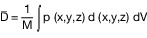

Dosimetrie
Durchschnittlich absorbierte Gesamtdosis
Bei der Bestimmung der Bekömmlichkeit von Lebensmitteln, die mit einer durchschnittlichen Gesamtdosis von 10 Kilogray oder weniger behandelt worden sind, kann davon ausgegangen werden, dass alle chemischen Bestrahlungseffekte in diesem spezifischen Dosisbereich proportional zur Dosis sind.
Die durchschnittliche Gesamtdosis D wird durch die nachstehende Integralgleichung für das behandelte Lebensmittel festgelegt:
| |  |
| Hierbei ist | M = | die Gesamtmasse der behandelten Probe |
| | p = | die lokale Dichte an dem betreffenden Punkt (x,y,z) |
| | d = | die an dem betreffenden Punkt (x,y,z) absorbierte lokale Dosis und |
| | dV = | infinitesimales Volumenelement dx dy dz |
Die durchschnittlich absorbierte Gesamtdosis kann für homogene Erzeugnisse oder Erzeugnisse in losem Zustand mit einer homogenen Fülldichte unmittelbar bestimmt werden, indem eine entsprechende Anzahl von Dosimetern gezielt und nach einer Zufallsverteilung über das gesamte Warenvolumen verteilt werden. Aus der so ermittelten Dosisaufteilung kann ein Durchschnittswert errechnet werden, der der durchschnittlich absorbierten Gesamtdosis entspricht.
Ist der Verlauf der Dosisverteilungskurve durch das gesamte Erzeugnis klar erkennbar, kann auch ermittelt werden, wo Mindest- und Höchstdosis auftreten. Messungen der Dosisverteilung an diesen beiden Stellen bei einer Reihe von Probeexemplaren des Erzeugnisses ermöglichen eine Schätzung der durchschnittlichen Gesamtdosis.
In einigen Fällen ist der Mittelwert des Durchschnittswertes der Mindest- (Dmin) und der Höchstdosis (Dmax) ein guter Schätzungswert der durchschnittlichen Gesamtdosis. In diesen Fällen entspricht
Verfahren
Vor der routinemäßigen Bestrahlung einer gegebenen Gruppe von Lebensmitteln in einer Bestrahlungsanlage wird mit Dosismessungen im gesamten Produktvolumen ermittelt, an welcher Stelle die Höchst- und die Mindestdosis auftritt. Eine ausreichende Zahl dieser Validierungsmessungen muss vorgenommen werden (z. B. 3 bis 5), um den Schwankungen der Dichte oder Geometrie der Erzeugnisse Rechnung zu tragen.
Die Messungen müssen wiederholt werden, wenn das Erzeugnis, seine Geometrie oder die Bestrahlungsbedingungen geändert werden.
Während der Behandlung werden routinemäßige Dosismessungen durchgeführt, um sicherzustellen, dass die Dosisgrenzen nicht überschritten werden. Zur Durchführung der Messung werden Dosimeter beim voraussichtlichen Ort der Höchst- und Mindestdosis oder in einer Bezugsposition angeordnet.
Die Dosis an dieser Bezugsposition muss mengenmäßig mit der Höchst- und der Mindestdosis verbunden sein. Die Bezugspunkte müssen an einem günstigen Punkt im oder auf dem Erzeugnis gewählt werden, an dem die Dosisschwankungen gering sind.
Die routinemäßigen Dosismessungen sollten während der Produktion bei jedem Los und in geeigneten Abständen durchgeführt werden.
Werden fließende, unverpackte Erzeugnisse bestrahlt, so können Mindest- und Höchstdosis nicht bestimmt werden. Das Ermitteln der Extremwerte sollte in diesen Fällen durch Stichproben erfolgen.
Die Dosismessungen sollten mit anerkannten Dosimetern vorgenommen und auf Primärnormen bezogen werden.
Während der Bestrahlung müssen einschlägige Parameter der Anlage ständig überwacht und aufgezeichnet werden. Bei Radionuklidanlagen umfassen die Parameter die Produkttransportgeschwindigkeit oder die Aufenthaltszeit in der Strahlungszone und die genaue Angabe der korrekten Stellung der Quelle. Für die Beschleunigungsanlagen umfassen die Parameter die Produkttransportgeschwindigkeit und das Energieniveau, den Elektronenfluss und die Scan-Breite der Anlage.